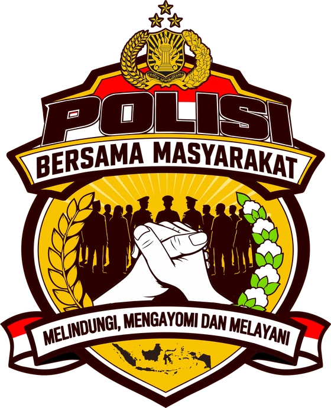

KAPOLSEK KAPUAS TENGAH
Iptu Aldrin Oktavianto Renaldy, S.Tr.K., S.I.K., M.H.
[Profil singkat Kapolsek: riwayat pendidikan, penugasan sebelumnya, dan fokus kepemimpinan. Menjabat sebagai Kapolsek Kapuas Tengah sejak akhir Oktober 2026.]
Beranda / Profil
Profil PolsekKepolisian Sektor Kapuas Tengah adalah unsur pelaksana Polres Kapuas, Polda Kalimantan Tengah, yang bertanggung jawab atas keamanan dan ketertiban di Kecamatan Kapuas Tengah, dengan Mako di Desa Pujon.

Polisi Bersama Masyarakat adalah pendekatan pengabdian Polri yang menempatkan masyarakat sebagai mitra utama dalam menjaga keamanan dan ketertiban. Kedekatan dengan warga dibangun lewat kehadiran, komunikasi, pelayanan, kerja sama, dan kepercayaan.
Berdasarkan Pasal 13 Undang-Undang Nomor 2 Tahun 2002 tentang Kepolisian Negara Republik Indonesia.
[Profil singkat Kapolsek: riwayat pendidikan, penugasan sebelumnya, dan fokus kepemimpinan. Menjabat sebagai Kapolsek Kapuas Tengah sejak akhir Oktober 2026.]
Susunan jabatan mengikuti pola organisasi Polsek. Nama personel yang masih di dalam kurung menunggu data resmi Polsek.
Booking kunjungan, kirim pengaduan, atau hubungi kami langsung.